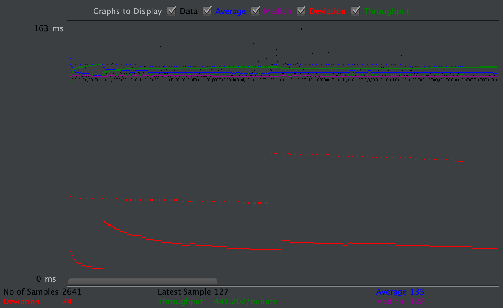
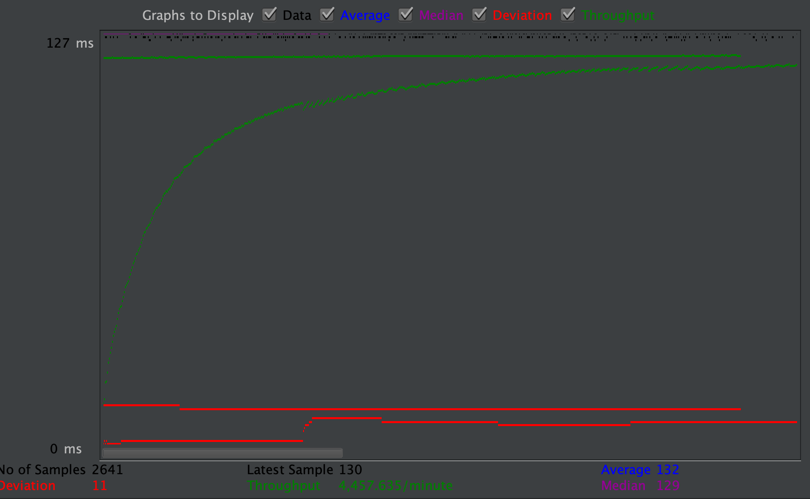
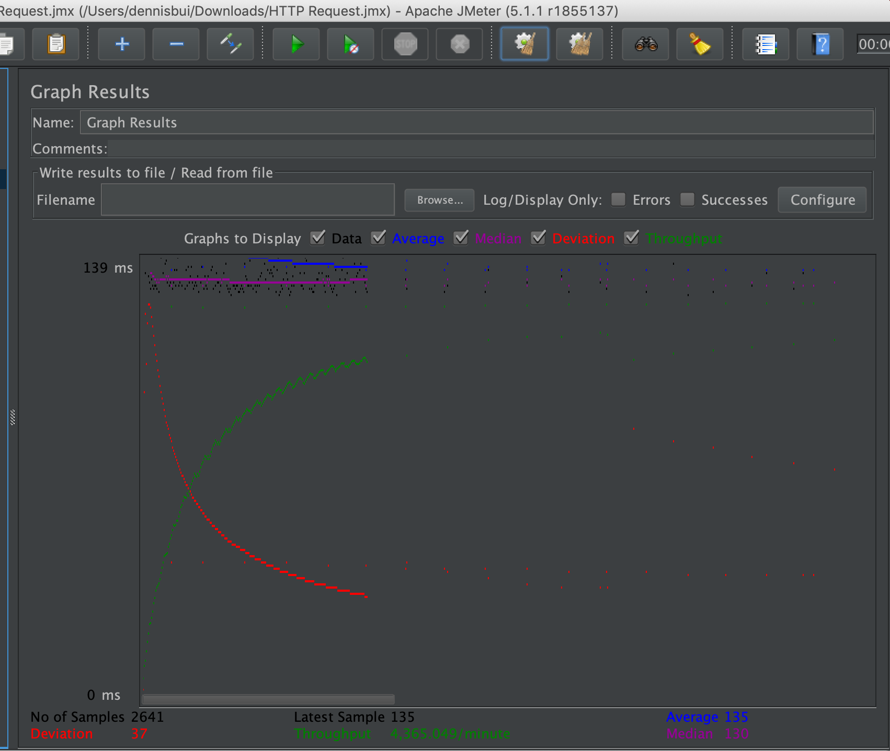
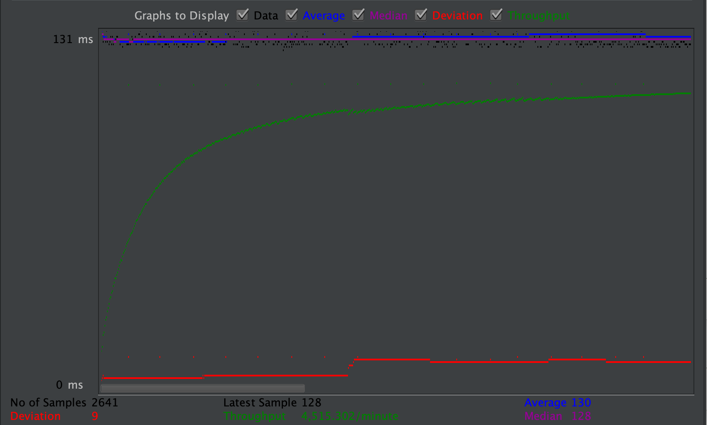
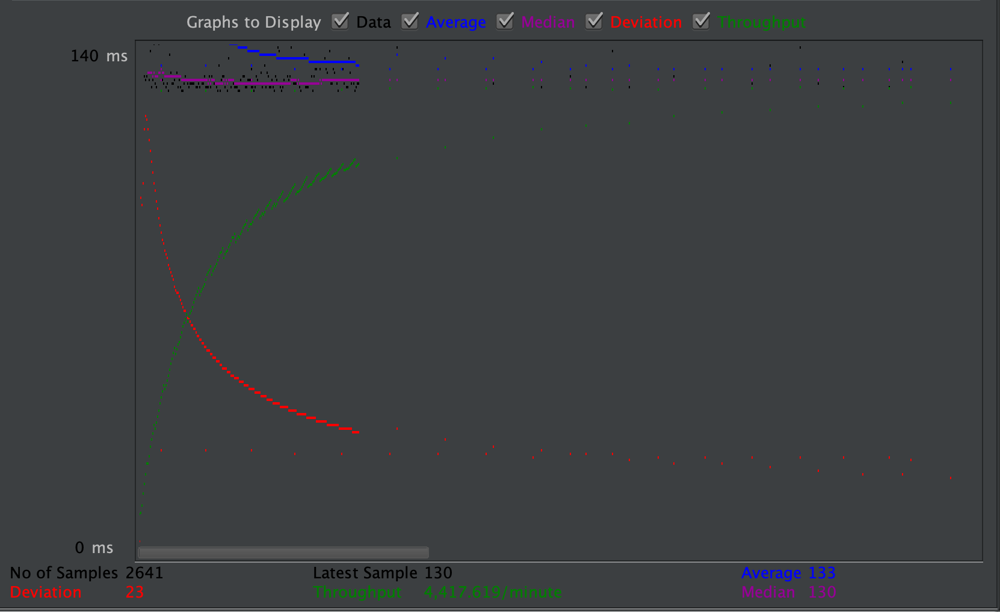
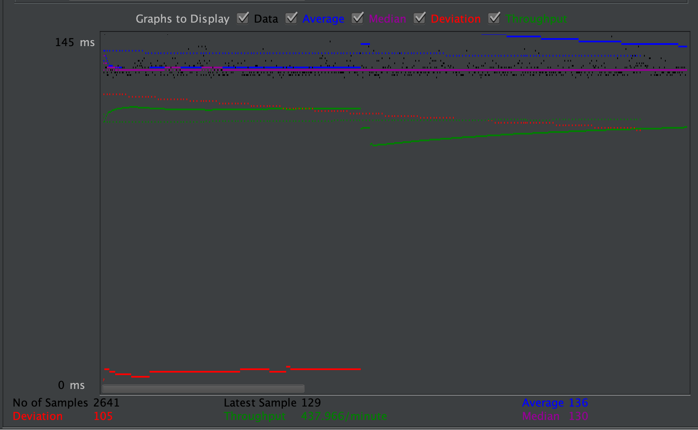
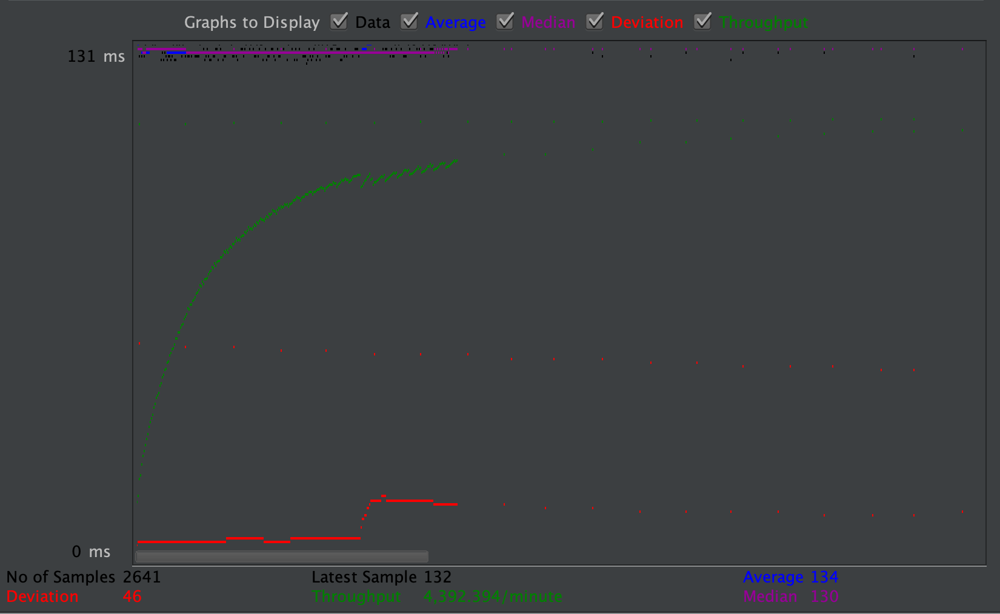
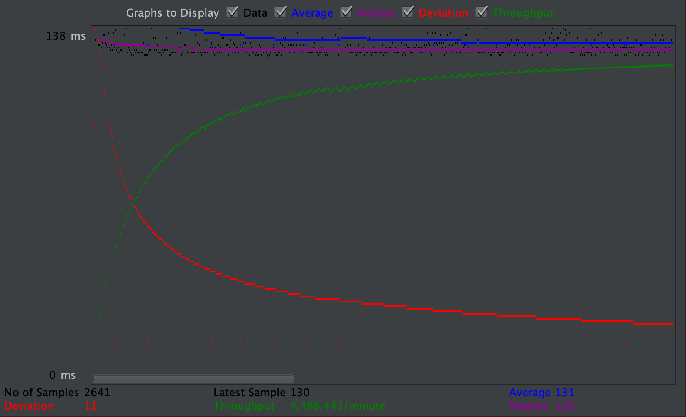
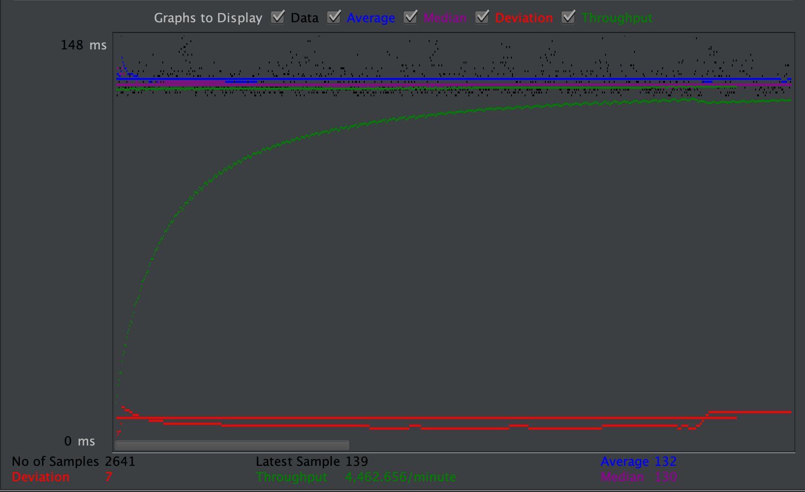

| Single-instance version cases | Graph Results Screenshot | Average Query Time(ms) | Average Search Servlet Time(ms) | Average JDBC Time(ms) | Analysis |
| Case 1: HTTP/1 thread |  | 135 | 31268014 | 4678978 | This is considered the baseline and should be the fastest of the connections on this port |
| Case 2: HTTP/10 threads |  | 132 | 352268014 | 5340158 | The higher the amount of threads the slower the average time will be |
| Case 3: HTTPS/10 threads |  | 135 | 352379813 | 5340512 | Due to the security from this case, HTTPS slows down the runtime of the average query because of its overhead |
| Case 4: HTTP/10 threads/No prepared statements |  | 130 | 352268014 | 5270158 | This case is similar to case 2 except it requires no prepared statements. Normal statements were used instead and therefore takes longer than case 2 |
| Case 5: HTTP/10 threads/No connection pooling |  | 132 | 374269024 | 5340158 | With no connection pooling the average should be marginally slower and that was the case because of the fact that we are not recycling connections |
| Scaled version cases | Graph Results Screenshot | Average Query Time(ms) | Average Search Servlet Time(ms) | Average JDBC Time(ms) | Analysis |
| Case 1: HTTP/1 thread |  | 136 | 4859436 | 4364088 | This is the baseline for the 80 port, the 80 port tends to be faster than the 8080 port |
| Case 2: HTTP/10 threads |  | 134 | 4799773 | 5231342 | In this case the average was a little bit faster however the TJ slowed down quite a lot while the TS stayed relatively the same |
| Case 3: HTTP/10 threads/No prepared statements |  | 131 | 4683232 | 5232645 | With no prepared statements, the run times were relatively the same, I think it might be because of the simplicity of the prepared statement, therefore having not much to improve upon |
| Case 4: HTTP/10 threads/No connection pooling |  | 132 | 5046869 | 5597700 | This is the slowest of them all because connection pooling allows for multiple connection recycling which speeds up the runtime significantly |